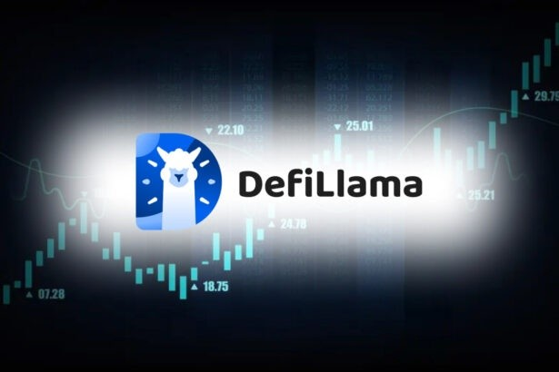
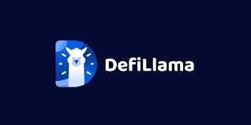

Defi Llama & My Accidental Side Hustle: A Content Creator's Unexpected Ally
Okay, so picture this: it’s 3 AM. I’m fueled by lukewarm coffee and the desperate need to hit a content deadline. My brain, usually a chaotic firework display of ideas, is a blank canvas. And then, like a digital muse descended from the heavens (or maybe just a slightly less-caffeinated me stumbling across a link), I findSwap Llama .
I know, I know, "Defi Llama" sounds like something you'd find in a particularly surreal children's book. But trust me, it's way more relevant to my life – and maybe yours – than you might think. For those uninitiated, Defi Llama is essentially a comprehensive dashboard for decentralized finance (DeFi) protocols. It’s a goldmine of data, tracking everything from total value locked (TVL) to individual protocol performance. Sounds intimidating? It did to me at first. I'm a content creator, not a financial analyst!

But here's the thing: as a content creator covering the crypto space (yes, it's as niche as it sounds), access to real-time, reliable data is everything. Think about it: trying to write compelling articles about the latest DeFi trends without knowing which protocols are actually thriving and which are… well, let’s just say "not thriving" is like trying to bake a cake without flour. It's not going to work.
At first, I just used Defi Llama for quick stats – verifying figures, checking TVL numbers. Pretty basic stuff. But then I started to see its potential. I realized I could use Defi Llama's data to tell stories. I could weave narratives around protocol growth, analyze market trends, and even predict potential future developments (with the usual healthy dose of caveat emptor, of course – I'm not a financial advisor!). Suddenly, my content felt less like a regurgitation of press releases and more like… well, actual insight.
The learning curve, I admit, was a bit steep. I had to spend some time navigating the interface, understanding the different metrics, and getting used to the jargon. There were moments of utter frustration, where I’d stare blankly at graphs, completely overwhelmed. But hey, isn’t that the beauty (and the beast) of learning something new?
Now, my process is a little different. Before starting a piece on a specific DeFi project, I head straight to Defi Llama. I’ll analyze its TVL over time, look at its ranking compared to competitors, and check out its key metrics. This helps me focus my research, shape my narrative, and even identify potential angles others might have missed. This essentially provides an easy shortcut to a lot of the otherwise legwork. It's like having a personal research assistant – a silent, data-driven Yoda guiding my content creation.
Is Defi Llama a magic bullet that solves all my content creation problems? Absolutely not. I still need creativity, storytelling skills, and a good cup of coffee (lots of coffee). But it's become an invaluable tool, a secret weapon in my arsenal. It's leveled up my game, quite literally.
This whole journey with Defi Llama has been a bit of a surprise. I started with a desperate need to meet a deadline and ended up discovering a powerful tool that has transformed my approach to content creation. So, if you're a content creator or builder in the DeFi space (or even just curious about it), give Defi Llama a try. You might just surprise yourself with what you discover. And who knows, maybe you'll even find your own accidental side hustle hiding within its depths. Because, let's be honest, at 3 AM, even accidental side hustles feel pretty good.
Defi Llama Swaps: My Accidental (and Slightly Profitable) Trip Down the Token Rabbit Hole
Okay, let's be honest. My foray into the world of DeFi Llama swaps wasn't exactly planned. It started, as many things do, with a misplaced sense of curiosity and a slightly embarrassing amount of disposable income. I'd been reading about these decentralized exchanges, these mystical places where you could swap tokens like trading baseball cards, but with, you know, actual monetary value (and potentially, a lot more stress).
My initial thought? "This sounds way too complicated. I'll stick to index funds." But then, a friend – bless his adventurous heart – mentioned Defi Llama. He described it as a kind of "all-in-one" dashboard for decentralized finance, a place to track your investments, see what's trending, and... well, that's where the slightly murky part started. He hinted at the potential for, shall we say, optimized token swaps.
I'm not going to lie, my first few attempts were… underwhelming. I felt like I was navigating a labyrinth designed by a mischievous goblin, constantly second-guessing myself. Transaction fees felt exorbitant, slippage was a constant threat, and I spent more time staring at charts than actually living. It felt less like sophisticated finance and more like playing a particularly frustrating game of digital whack-a-mole.
Then, something shifted. I started paying closer attention to the gas fees, I learned to recognize the nuances of slippage (it’s basically the difference between the expected exchange rate and the actual rate – think of it as a DeFi version of the dreaded “shrinkflation”), and I began to understand the importance of choosing the right DEX for the job. Suddenly, those small profits began to accumulate, not in some earth-shattering, life-changing way, but in a satisfyingly steady drip, drip, drip.
It’s fascinating, isn't it? How something that seemed initially opaque and overwhelming can, with a little patience and education, start to make sense? It's like learning a new language – at first, it's all gibberish, but gradually, words start to form, sentences emerge, and finally, you can hold a conversation. And, in this case, the conversation is about making (small) profits.
But here's where I get a little conflicted. The ease with which you can seemingly "make money" on these platforms is, to say the least, unnerving. It feels almost too easy, and that feeling alone is a red flag. The thrill of the chase, the potential for quick wins, the inherent volatility – it's all incredibly seductive. And that's exactly what makes it dangerous. You're constantly walking a tightrope between calculated risk and reckless gamble, and the line between the two can be frighteningly blurry.
So, have I found the magical key to financial freedom through Defi Llama swaps? Absolutely not. Have I learned something interesting and potentially profitable in the process? Undoubtedly. This journey has been less about a get-rich-quick scheme and more about understanding a complex system, navigating its quirks, and learning to manage risk. It’s been a lesson in patience, research, and a healthy dose of self-awareness. Perhaps that’s the real value here – not the fluctuating numbers on my crypto portfolio, but the intellectual curiosity, the problem-solving skills, and the healthy skepticism that I've honed along the way.
This isn't a "how-to" guide, not really. It’s a reflection on a personal experience, a journey into the sometimes bewildering world of decentralized finance. It's a testament to the power of curiosity and the importance of approaching the world of cryptocurrency with a healthy dose of caution and, above all, common sense. Because, let's face it, even with Defi Llama, sometimes you just have to accept that the goblin guarding the labyrinth might just win this round.
The Wild, Wild West of Cross-Chain Payments: My Defi Llama Saga
Okay, so picture this: you're finally ready to cash out from that wildly successful NFT drop on Polygon. You're practically doing a happy dance, visions of a much-needed vacation swirling in your head. But then… reality hits. Your vacation fund is stuck on Polygon, and your landlord only accepts good old-fashioned USDC on Ethereum. Cue the existential dread. Sound familiar?
This, my friends, is the frustrating reality of the decentralized finance (DeFi) landscape. We're in the wild, wild west of blockchain technology, where each chain is its own little kingdom with its own currency and rules. Getting your hard-earned crypto from point A to point B can feel like navigating a treacherous mountain pass on a rickety donkey.
Enter DefiLlama's cross-chain swap aggregator – a potential game-changer, at least in my experience. Now, I’m no crypto guru – I’m more of a cautious explorer tiptoeing into this digital frontier. I've had my fair share of moments where I've stared blankly at my screen, muttering things like, "What is a liquidity pool again?" But even I can see the potential here.
DefiLlama, for those uninitiated (like myself, a few weeks ago), acts as a bridge between different blockchains. It scans various decentralized exchanges (DEXs) to find you the best possible route – and, critically, the best possible rate – for swapping your tokens across chains. Think of it as a super-powered Kayak for your crypto. It compares flights (or, you know, token swaps) and finds you the cheapest and most efficient option. Amazing, right?
Well, mostly amazing. My first attempt was… an adventure. I was trying to move some quirky meme coin from Avalanche to Binance Smart Chain. It took longer than expected – I swear, I aged a few years waiting for the transaction to confirm. And the fees? Let's just say I’m now actively looking into ways to monetize my sighs of relief.
But after that initial rollercoaster, I started to appreciate DefiLlama's power. The platform’s interface is surprisingly user-friendly, especially compared to some of the more… rustic DEXs I’ve encountered. The transparency about fees is also a huge plus; knowing exactly where your money is going – and how much it's costing – is a refreshing change in this sometimes opaque world.
The key takeaway for me is this: DefiLlama isn't a magical solution that eliminates all cross-chain headaches. It’s a tool, and like any tool, its effectiveness depends on how you use it. You still need to understand the risks involved – slippage, gas fees, potential smart contract vulnerabilities. It’s not a get-rich-quick scheme; it's a carefully considered option for moving your crypto assets effectively.
So, back to my original vacation fund conundrum: thanks to DefiLlama, I'm now much closer to that much-needed beach getaway. My experience wasn't perfect, but it was a learning journey. And that, ultimately, is what makes navigating the DeFi world so compelling – the constant evolution, the opportunities, and the ever-present (albeit slightly terrifying) feeling of being on the cutting edge of something truly revolutionary. It’s certainly not for the faint of heart, but the potential rewards, and the gradual understanding of the technology, make the journey worth it. And hey, maybe I’ll even write a more informed article about this whole thing in six months’ time. Wish me luck!
Trading Rewards: My Accidental Dive into Swap Defi Llama's Quirky World
Okay, confession time. I'm not exactly a DeFi wizard. I’m more of a "carefully clicks buttons and hopes for the best" kind of user. Think of me as the person who accidentally buys a lottery ticket and then spends the next week convinced they're going to be a millionaire. That's roughly my level of crypto expertise. So, when a friend mumbled something about "Swap Defi Llama" and "community rewards," my initial reaction was a polite, slightly glazed-over nod. "Sure, sounds… interesting," I murmured, picturing spreadsheets and complex algorithms that would likely fry my brain.
But then, curiosity, that mischievous little gremlin, gnawed at me. What were these community rewards? Was it like a loyalty program, but for… blockchain stuff? The image of earning digital stickers for staking coins popped into my head – and it wasn't entirely unpleasant. The more I looked into it, the more it felt like exploring a hidden world, a secret society of yield farmers and token enthusiasts, all exchanging little digital treasures.
Swap Defi Llama, as I eventually learned, is like a bustling marketplace for these rewards. It’s not just about passively earning tokens; it's about actively trading them – and that's where things got… fascinating. You see, different protocols offer different rewards, some in obscure tokens you've never heard of, others in established coins. Swap Defi Llama allows you to swap these rewards, to optimize your earnings and perhaps even snag a gem before it explodes in value (or, you know, plummets into oblivion – the thrill of the gamble, right?).
It's a bit like a farmer's market, but instead of tomatoes and zucchini, it's a chaotic, exciting jumble of obscure DeFi tokens. One minute you're eyeing a token promising astronomical APY (Annual Percentage Yield – which, let's be honest, is always a bit suspect), the next you're staring blankly at a token name that looks like someone smashed their keyboard. (Seriously, some of these names are… creative.)
The learning curve, admittedly, was steep. I spent a good chunk of time feeling like a bewildered tourist trying to navigate a foreign language. There were moments of sheer panic – I’m pretty sure I almost accidentally sent my entire life savings (which, admittedly, isn't much) into the digital void. There were also moments of exhilaration – that tiny feeling of triumph when a trade goes through successfully, like conquering a particularly tricky level in a video game.
And that's the thing, isn’t it? This whole DeFi world is a strange blend of bewilderment, frustration, and unexpected joy. It's a wild west of digital currencies, full of potential but also fraught with risks. Swap Defi Llama, with its messy, slightly chaotic nature, reflects that perfectly. It's not polished and elegant; it’s vibrant and raw, a mirror of the community it serves.
I still wouldn’t call myself a DeFi expert. I’m still more likely to accidentally click the wrong button than to execute a flawless trading strategy. But my foray into Swap Defi Llama has been more than just a technical experience; it's been a journey into a hidden corner of the internet, a community driven by curiosity, innovation, and a shared love (or at least a grudging respect) for the slightly insane world of decentralized finance. And that, I’ve come to realize, is far more valuable than any amount of digital tokens. It's a reminder that sometimes the most rewarding journeys are the ones that lead you down unexpected paths, full of bumps, stumbles, and the occasional, well-deserved "Eureka!" moment.
NFTs and the Llama That Changed My Laundry Day (Sort Of)
Okay, so maybe the llama didn't literally change my laundry day. But it’s a pretty good metaphor for how Swap Defi Llama’s integration into NFT creator tools is shaking things up. Last week, I was drowning in a mountain of laundry, desperately wishing for some kind of automated, magically efficient system. Sound familiar? Well, that feeling of overwhelming chaos is kind of how I felt about managing the financial side of my NFT projects before I discovered this…llama-powered (okay, partially llama-powered) revolution.
I create digital art, mostly whimsical animations of dancing cacti in tiny cowboy hats. Yes, really. And while the creative process is a joyful explosion of pixels, the business side? Let's just say it involved a lot more spreadsheets than I ever anticipated. Keeping track of royalties, swapping between different chains, navigating gas fees... it felt like herding digital cats. Each transaction felt like another sock disappearing into a black hole in my laundry basket.
Then, a friend mentioned Swap Defi Llama. Initially, I was skeptical. A llama? Really? It sounded like something dreamt up after one too many margaritas at a crypto conference. But curiosity, that insatiable beast, got the better of me.
Swap Defi Llama, in its essence, is an aggregator. It pulls data from various decentralized finance (DeFi) platforms, presenting a clearer picture of token prices, liquidity pools, and – crucially for me – transaction costs. Now, this is where it gets interesting for NFT creators. Several emerging creator tools are integrating this data, making it significantly easier to manage the financial aspects of your NFT projects.
Imagine this: you've just dropped a new collection. You're buzzing with excitement, checking your sales numbers. Now, instead of manually comparing prices across different marketplaces and calculating those pesky royalties, the tool (powered by the Llama) does it all for you. It suggests optimal swapping strategies to minimize fees, maximizing your profit – essentially, it's like having a tiny, tireless, llama-shaped accountant working 24/7.
Of course, there are still challenges. The DeFi space is incredibly dynamic, and the tools integrating Defi Llama are still relatively new. There’s a learning curve, and glitches are possible. It’s not some magical, foolproof system – I've still had moments of mild panic when a transaction took longer than expected. (The digital equivalent of a sock mysteriously vanishing in the dryer.)

But the potential is undeniable. It levels the playing field for independent NFT creators. Suddenly, the overwhelming administrative burden is lessened, freeing up time and mental energy to focus on what truly matters: the art itself. And you know what? Knowing exactly how much my cactus cowboys are making me, without hours of tedious manual labor? That's way more rewarding than finding a perfectly folded pair of socks at the end of a laundry cycle.
This whole journey, from initial skepticism to hesitant appreciation, reminds me that even in the complex and often bewildering world of NFTs and DeFi, there's always room for innovation and simplification. And sometimes, that innovation comes in the most unexpected forms – perhaps even a llama. I’m still not entirely sure how a llama fits into this, but I'm grateful for its (metaphorical) assistance. My laundry basket remains a battlefield, but my NFT finances? Slightly less chaotic, thanks to the llama.
Netflix, but on the Blockchain? How Swap Defi Llama is Changing the Subscription Game
Okay, confession time. I’m a creature of habit. My Spotify playlist is a chaotic mix of 80s hair metal and Gregorian chant, my coffee order is always the same (extra shot, oat milk, judgmental stare from the barista), and yes, I’m still paying for a Netflix subscription even though I mostly watch the same three documentaries on repeat. It’s comfort, people! But what if that comfort, that predictable monthly drip of content, could be decentralized? That’s where Swap Defi Llama and its implications for subscription models come in, and honestly, it's blowing my mind a little.
Swap Defi Llama, for the uninitiated (and let's be honest, that's probably most of us), is a platform that aggregates data from various decentralized finance (DeFi) protocols. On the surface, it looks like a complex spreadsheet for crypto nerds. But scratch beneath the surface and you find something incredibly powerful: the potential to revolutionize how we think about subscriptions. I mean, think about it – we're used to centralized platforms controlling our access to everything from music to movies to…well, you name it. What if that power, that gatekeeping, could be distributed?
Now, I'm not going to lie, the technical details are a bit… dense. I've spent a good amount of time staring blankly at charts, nodding along with cryptocurrency influencers who seem to speak fluent gibberish (is “synergistic utility token” a real phrase? Because it sounds like something I'd invent while sleepwalking). But the core idea is surprisingly simple: using smart contracts on the blockchain, we can create transparent, secure, and potentially more equitable subscription models.
Imagine a world where creators directly interact with their audience, bypassing the middlemen who often take a hefty cut. Imagine subscription boxes curated by AI, learning your tastes and sending you only the things you actually want (goodbye, unwanted bath bombs!). Imagine micro-subscriptions for niche services, allowing access to specialized tools or information without the commitment of a full-blown annual fee.
But here's where it gets interesting, and maybe a little messy. Decentralization isn't a magic bullet. It comes with its own set of complexities – scalability issues, the potential for volatility, and let’s not forget the whole "understanding blockchain technology" hurdle. My brain feels like a tangled ball of yarn after trying to wrap my head around the implications, but still, there’s an exciting possibility there. What if artists could set their own prices, allowing fans to directly support them? Could we build a more sustainable and fairer system for content creation?
These are not easy questions, and frankly, I don't have all the answers. Maybe some of this is pure hype, fueled by the ever-optimistic crypto community. Maybe I'm just getting caught up in the utopian vision of a decentralized future. But the potential for Swap Defi Llama and similar platforms to reshape how we consume and create content is undeniably compelling.
Looking back, this article started with a simple observation about my Netflix habits, and ended with me questioning the very fabric of digital consumption. That’s the thing about technology – it forces us to confront our assumptions, challenge our comfort zones, and maybe, just maybe, build a better way of doing things. The journey wasn't about mastering the technical complexities, it was about exploring the potential for a more decentralized, and potentially more human, future of subscriptions. And that, my friends, is a subscription I’m happy to renew.
Swapping Stickers for Satoshi: In-App DeFi and the Creator Economy's Next Frontier
Remember those Beanie Babies? The frenzied collecting, the whispered rumours of rare finds, the agonizing choices of which fuzzy critter to trade? It feels a little like that right now, but instead of plush toys, we're talking about creator tokens and in-app DeFi. Specifically, I'm thinking about Swap Defi Llama's potential to revolutionize how creators and their audiences interact, and frankly, I'm a little giddy about it.
I’ve been following the creator economy for years, watching creators grapple with platforms’ often opaque revenue models. It's a constant tightrope walk between creating engaging content, building a community, and somehow making enough money to, you know, live. Platforms take their cut, and creators are left hoping for enough ad revenue or subscriptions to keep the lights on. Sounds exhausting, right?
Enter the world of decentralized finance (DeFi) and the potential of in-app swaps. Imagine a scenario where your favorite artist on Substack isn't just selling subscriptions, but also offering limited-edition NFTs that can be traded directly within the app using Swap Defi Llama. Or perhaps a Twitch streamer allows viewers to swap their earned tokens for exclusive content or merch. It feels like a beautiful symphony of community, incentivization, and… well, let's be honest, a whole lot of potential for both excitement and chaos.
Swap Defi Llama, for those unfamiliar (and I admit, I was one of them until recently), essentially provides the backend infrastructure for these in-app swaps. It's the plumbing that allows creators to easily integrate DeFi functionality without needing to become blockchain experts overnight. This is crucial. Because let's face it, most creators are more focused on creating, not coding smart contracts. They need tools that are user-friendly and intuitive, not something that requires a PhD in computer science.
But here's where I start to get a bit… hesitant. The decentralized nature of DeFi is, of course, a double-edged sword. While it promises greater transparency and creator control, it also opens the door to risks. Volatility, scams, and the complexities of crypto itself could intimidate both creators and their audiences. Will the average TikToker really understand the nuances of impermanent loss? I'm not so sure. Will they even care?
This is where a lot of thoughtful development and education are absolutely necessary. We need user interfaces that are both visually appealing and incredibly intuitive, explainer videos that break down complex DeFi concepts in plain English (or even better, emoji), and maybe even some friendly chatbot assistance to guide users through the process. It can't be a Wild West situation where only the tech-savvy survive.
So, where does this leave us? Well, it's early days, to say the least. The integration of Swap Defi Llama (or similar solutions) into mainstream creator platforms is still unfolding. There are definitely bumps in the road ahead, and plenty of potential pitfalls. But the idea of a more equitable, community-driven, and frankly, more fun creator economy feels undeniably powerful. I'm cautiously optimistic, but ultimately, the success of this depends on building something accessible and user-friendly—something that feels less like navigating a minefield and more like trading those Beanie Babies, back in the day, only with slightly more potential for life-changing riches (or losses, let's be realistic). The future, it seems, is both exciting and a little bit terrifying – and that, my friends, is exactly how innovation should feel.
My Fan Token Fiasco (and How Swap & DefiLlama Saved My Sanity)
Okay, let’s be honest. I’m not exactly a crypto guru. My knowledge peaked around the Doge-fueled rollercoaster of 2021, mostly fueled by memes and a healthy dose of FOMO. So when my friend, bless his cotton socks, convinced me to invest in a fan token for his beloved (and frankly, slightly overrated) football team, I dove in headfirst. Cue the dramatic music.
The initial euphoria? Let’s just say it rivaled winning the lottery… for about five minutes. Then reality hit. The token's price plummeted faster than my hopes of ever understanding blockchain technology. I was stuck, holding a bag of digital disappointment. Worse, I had no idea how to even begin to manage my liquidity. It felt like trying to navigate a crowded airport terminal blindfolded, while juggling flaming bowling pins.
That’s where Swap and DefiLlama stepped in. Now, I know what you’re thinking: "DefiLlama? Sounds like a mythical creature from a Tolkien novel." It's not quite as fantastical, but it's equally powerful. DefiLlama is essentially a central hub for all things DeFi, a kind of "Yellow Pages" for decentralized finance, providing aggregated data on various protocols. And Swap? Well, that's where the magic (and potential for more disaster, let's be honest) happens.
My initial attempts at navigating Swap were… less than graceful. Think a toddler trying to assemble IKEA furniture. It involved a lot of clicking, a fair amount of head-scratching, and several moments of intense self-doubt. But eventually, I started to get the hang of it. The key, I discovered, was understanding exactly what kind of liquidity I was dealing with. It’s not just about the numbers on the screen; it’s about grasping the underlying dynamics – the trading volume, the token’s overall health, and the general market sentiment (which, let's face it, can be as fickle as a teenager's mood).
DefiLlama became my trusted companion on this journey. I used it to compare various DEXs (Decentralized Exchanges), gauge the overall health of the fan token pool, and even track the slippage I was facing (because, yes, even that exists in the wonderfully complicated world of DeFi). It was like having a financial advisor… albeit one that didn't charge me exorbitant fees (yet another win for DeFi!).
So, did I magically transform my fan token woes into a fortune overnight? Nope. Not even close. But I did learn something invaluable: how to navigate the often-murky waters of DeFi liquidity management. And that, my friends, is a lesson worth more than any quick profit.
This journey wasn’t without its bumps. There were moments of panic, moments of frustration, and probably a few expletives muttered under my breath. But slowly, I gained confidence. It’s a reminder that even the most complex systems can be demystified with a little patience, a hefty dose of research, and the right tools. And for managing my fan token liquidity, Swap and DefiLlama proved to be exactly those tools.
The final lesson? Never invest in anything you don't understand completely, especially fan tokens for football clubs you only vaguely follow. But hey, at least I have a good story to tell. And a slightly better understanding of decentralized finance. And that, I suppose, is more valuable than any amount of cryptocurrency. Maybe. We’ll see what the market does tomorrow.
Building Creator-Focused dApps: My Accidental Odyssey with DefiLlama's API
So, picture this: It’s 3 AM. I'm fueled by lukewarm coffee and the unshakeable belief that I can somehow build a decentralized app that will revolutionize… well, something. Probably the way creators get paid. Ambitious? Absolutely. Realistic? Let's just say I'm working on it.
The problem, as any aspiring blockchain developer will tell you, isn't the idea (mine involves NFTs, cats, and surprisingly, accurate avocado price predictions – don't ask). It's the data. Where do you get reliable, up-to-the-minute information on DeFi protocols? That's where my accidental odyssey with Swap Llama 's API begins.
I’d heard whispers, of course, legends murmured in hushed tones in Discord servers about this magical data source. It sounded like something out of a sci-fi novel – a single API endpoint providing access to the entire DeFi universe. Slightly exaggerated, perhaps, but not far off. I mean, the sheer amount of information they offer is staggering. It's like stumbling upon the lost library of Alexandria, only instead of scrolls, you have JSON files filled with token prices, TVL, and enough other acronyms to make your head spin.
Initially, I was intimidated. The documentation, while helpful, felt a bit like learning Klingon. (Okay, maybe that's a slight exaggeration, but the learning curve was definitely steeper than I anticipated). I spent hours wrestling with code, battling syntax errors, and questioning all my life choices. There were moments where I wanted to give up and just stick to my day job – which, by the way, involves significantly less existential dread.
But then, something clicked. I started seeing the potential. Imagine building a dApp that lets creators see, in real-time, the performance of their NFT collections across various DeFi protocols. No more tedious spreadsheets, no more manual calculations. Just clean, reliable data, directly integrated into your creator tools. Suddenly, my lukewarm coffee tasted a bit less lukewarm. The existential dread? Slightly diminished.
The beauty of DefiLlama's API lies in its versatility. It's not just about fetching numbers; it's about understanding trends, analyzing market behavior, and even building predictive models. For example, you could create a dApp that alerts creators to potential dips in liquidity, allowing them to strategically adjust their pricing or marketing efforts. Or, maybe even something that predicts the next big meme coin (though I wouldn't bet my house on that one). The possibilities feel genuinely limitless.
Of course, it's not all sunshine and rainbows. Building a decentralized application is inherently complex, and relying on external APIs introduces its own set of challenges. What happens if DefiLlama goes down? What about data integrity? These are important questions that need careful consideration. It's a constant balancing act between innovation and risk management – a delicate dance, if you will.
But that's part of the fun, isn't it? The thrill of building something new, something potentially impactful, even if it means occasionally pulling your hair out in frustration. And truthfully, I wouldn't trade the experience for anything. My accidental odyssey with DefiLlama's API has been far more rewarding than I ever imagined. I may not have revolutionized creator payments yet, but I'm definitely closer than I was at 3 AM with that lukewarm coffee. And that, my friends, feels like a pretty big win.
Decoding Fan Tokens: My Accidental Dive into DeFi Llama and the Wild World of Crypto Fandom
Okay, let's be honest. I’m not a crypto guru. My understanding of blockchain technology is roughly equivalent to my ability to parallel park a double-decker bus – which is to say, nonexistent. But I am a huge fan of…well, a lot of things. Manchester United, independent bookstores, really good sourdough bread…you get the picture. So, when a friend started rambling about "fan tokens" and "Defi Llama," I initially glazed over. Fan tokens? Was this some weird NFT thing that would explode and then leave everyone holding a bag of digital regret?
But then, curiosity, that mischievous little gremlin, poked its head out. What was Defi Llama, and how did it connect to my beloved sports teams (and the potential for digital bread, maybe)?
Defi Llama, for the uninitiated (like myself, initially), is basically a dashboard that gives you a glimpse into the sprawling world of decentralized finance. It's like a cheat sheet for understanding complex crypto protocols, presented in a somewhat less intimidating way than a tax audit. And that’s where it became interesting. I started poking around, focusing on the "fan token" section. Suddenly, this cryptic world became a little…less cryptic.
I could see, in almost real-time, the market capitalization of various fan tokens, their trading volume, and even the total value locked (TVL) in related DeFi projects. It was like getting a backstage pass to the financial shenanigans of the sports world. Who knew you could track the fluctuating value of your digital allegiance so easily? It's both fascinating and slightly unsettling, like watching a particularly volatile stock ticker but instead of stocks, it’s the hope of your favorite football club.
Now, I'm not going to pretend I understand everything Defi Llama shows me. Some of the data is mind-boggling, even after several hours of clicking and squinting. There are charts and graphs that resemble abstract expressionist paintings more than financial reports. And the sheer amount of information can be overwhelming. It's a bit like trying to understand the rules of cricket after only watching one match — you’re vaguely aware of what's happening but completely lost in the details.
However, the sheer accessibility of Defi Llama is what surprised me the most. It's a tool that, even for a crypto noob like myself, provides tangible insights into a growing corner of the digital economy. You can see which teams are attracting the most investment in fan tokens, which platforms are dominating the market, and, frankly, which teams might be in for a bit of a financial rollercoaster ride.
What started as a casual investigation turned into a surprisingly engaging exploration of the intersection of fandom, finance, and technology. I’m still far from mastering the intricacies of DeFi, but Defi Llama has opened my eyes to a new way of thinking about the value of fan engagement – and the increasingly complex world of digital assets. It’s a world that blends the passionate irrationality of fandom with the cold, hard logic of finance, and Defi Llama allows you to see the collision, messy and fascinating as it is.
So, what have I learned? Besides the fact that I need to brush up on my blockchain basics, I’ve discovered a surprisingly accessible tool that illuminates the often opaque world of fan token economics. And maybe, just maybe, I can now finally explain to my bewildered family what I've been doing on my computer all day. Though the sourdough bread project remains firmly on the back burner for now. Maybe next week.
Llama-ing it a Day (and the Future of Creator Economies): My Defi Swap Odyssey
Okay, so picture this: I'm scrolling through TikTok, mesmerized by some guy meticulously crafting miniature furniture for hamsters. Adorable, right? But then a tiny voice in my head – the one usually reserved for existential dread at 3 am – whispered, "He's probably making a killing on this." And that’s when I started thinking about the creator economy, and how wild it's become thanks to things like DeFi platforms, specifically the insightful data dashboards like DefiLlama.
Initially, I viewed DefiLlama as, well, just another data website. A bit dry, a lot of numbers. I mean, who really wants to spend their precious weekend combing through tokenomics and liquidity pools? Clearly, not the hamster furniture guy (unless he's secretly a DeFi wizard, which, let's be honest, is a surprisingly plausible scenario in 2024).
But then I dove deeper. And wow. The sheer scale of data DefiLlama offers on decentralized finance protocols – especially how it relates to the creator economy – is mind-boggling. Suddenly, that seemingly niche hamster-sized armchair industry seemed like a microcosm of a much larger, rapidly evolving landscape.
Think about it: We’re seeing creators monetize their content in increasingly inventive ways. It's not just about Patreon anymore. NFT sales, branded tokens, decentralized autonomous organizations (DAOs) – the possibilities are almost overwhelming, a dizzying kaleidoscope of possibilities. DefiLlama helps us track the flow of funds within these new ecosystems, offering a glimpse into their growth and potential.
And that’s where the contradictions come in. On one hand, DefiLlama showcases the incredible democratization of finance, empowering creators to connect directly with their audience and bypass traditional gatekeepers. This feels radical, almost revolutionary. It's like the internet's wild west, but with smart contracts and yield farming.
But on the other hand, the sheer complexity can be intimidating. Not everyone understands the intricacies of liquidity pools or impermanent loss. Is it accessible to the average creator? Probably not yet. And therein lies a challenge: How do we bridge the gap between the innovative potential of DeFi and the practical needs of everyday creators? How do we make this powerful tool more user-friendly and less intimidating?
My initial skepticism has given way to a cautious optimism. DefiLlama isn't just a data platform; it's a window into a future where creators have unprecedented agency and control over their work and earnings. It’s a tool that allows us to follow the money, to see where the innovation is truly happening, and to understand the trajectory of this ever-evolving creator economy.

So, back to the hamster furniture guy. Maybe he's not a DeFi wizard after all. But maybe, just maybe, he’s unknowingly pioneering a new era of creator monetization, an era that DefiLlama helps us track and analyze. And that's pretty damn cool.
This journey through Swap Llama 's data has been surprisingly illuminating. I started with a simple curiosity, a fleeting thought sparked by a TikTok video. Now, I find myself pondering the implications of decentralized finance on the future of creative work. It's a complex landscape, filled with both immense potential and considerable challenges. But one thing is clear: the creator economy is evolving at an astonishing pace, and platforms like DefiLlama are giving us the tools to understand its fascinating transformation.
tags: defi, decentralized finance, content creation, web3, crypto, blockchain, defi llama, swap, content marketing, cryptocurrency